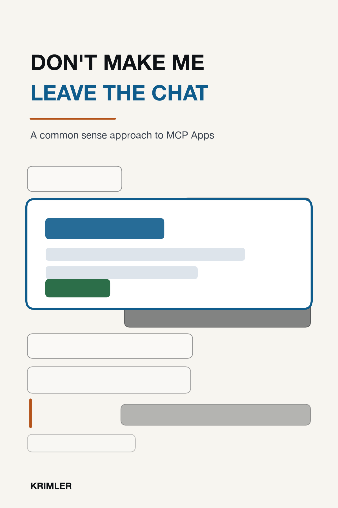

Don't Make Me Leave the Chat
A common sense approach to MCP Apps
An MCP App has two users. The human reads the pixels; the model reads the schemas and the text. This is a short book about designing for both, with four laws, teardowns you can run, and a testing method that costs an afternoon.
Pinned to core protocol 2026-07-28 and the MCP Apps extension
io.modelcontextprotocol/ui. Every figure regenerates from the
companion gallery in the repository.
Front matter
Preface
What this book is for, who it is for, and what it deliberately does not cover.
How to Read This Book
Four parts, thirteen short chapters, and three ways through.
Part 1 - Guiding Principles
Chapter 1
Don't Make Me Leave the Chat
The first law, the three questions that enforce it, and the same task built three ways.
Chapter 2Your App Has Two Users
The book's thesis: the human reads pixels, the model reads schemas, and both can be failed.
Chapter 3How People Actually Use Apps in Chat
Glancing, satisficing, partial attention, streaming data, and a viewport you do not control.
Chapter 4Never Ask What the Conversation Already Knows
Prefill from context, make it correctable, and treat every click as a tax.
Chapter 5Omit Needless Widgets
The six archetypes, what each owes both users, and the case for shipping zero.
Part 2 - Things You Need to Get Right
Chapter 6
The Machinery, Briefly
The lifecycle in one page, the four messages you will write, and the two channels.
Chapter 7State, or Knowledge in the World versus in the Head
What belongs in the widget, what belongs in the transcript, and why your widget can be wrong through nobody's fault.
Chapter 8Navigation in Someone Else's House
No URLs, no tabs, no back button, and what actually replaces each of them.
Chapter 9Forms and Actions
The humbling case for plain elicitation, validation for two users, consent without nagging, and undo when the model pressed the button.
Chapter 10Trust, Courtesy, and the Sandbox
Every render spends trust that belongs to the whole medium, and the accessibility payoff hiding in Law 2.
Part 3 - Making Sure You Got It Right
Chapter 11
Testing on Ten Prompts a Day
Five humans and an afternoon, plus the half that is new: does the model use your app correctly.
Chapter 12Hosts Are the New Browsers
The compatibility reality, and a fallback ladder you design rather than suffer.
Part 4 - Larger Concerns
Appendices
Appendix A
The Laws, on One Page
The tape-to-your-monitor sheet.
Appendix BThe Host Capability Matrix, Generated
Which hosts render MCP Apps, where the data came from, and how to regenerate it.
Appendix CThe Ten-Prompt Test Kit
Scripts, task templates, and scoring sheets for Chapter 11's method.
Appendix DGallery Repository Map
Every figure traced to the app and the command that produced it.